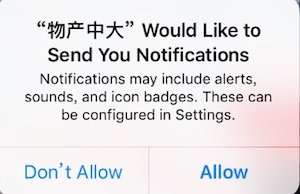
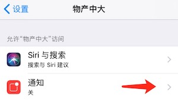
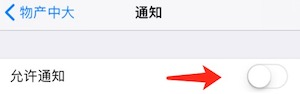
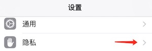
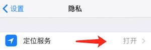
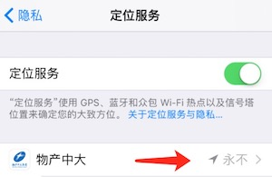
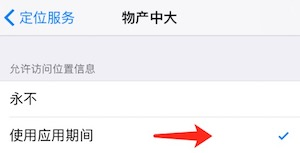

- 1. 自动登录功能
- 自动登录按钮选择,下次登录时可以免输密码.
- 2. OA通知接收不到
- 第一次安装App的时候,会提示如下.要选择允许推送.
 -
如果第一次不小心点了不同意,要如下操作.
(1).打开设置,找到物产中大APP
(2).点击通知

(3).点击运行通知

- 3. 在线考勤无法使用
- 在线考勤,要求打开手机定位功能。
(1).打开设置,找到隐私

(2).打开隐私,找到定位服务

(3).打开定位服务,找到物产中大APP

(4).打开物产中大,允许访问
